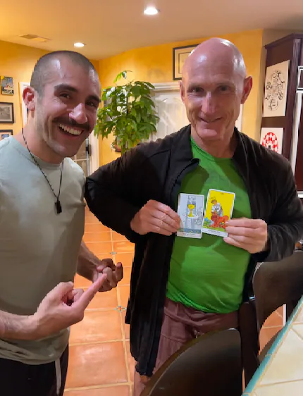

B854 · Upcoming Tarot Workshop with Paul Chek
Hi {first_name},
The Tarot has been part of Paul Chek's personal and professional practice for many years. He even shared with us the spot in his library where he has 13 years of documented daily readings that his soul has shared with him through these powerful cards and archetypal symbols.
 After wrapping up a podcast together (coming to The Path soon!) Paul guided me through a reading that blew Lauren and I away. While energetics are involved, and this work is really about creating a dialogue between self + soul, it is also a very practical tool for self inquiry and daily spiritual guidance. The messages that come from the cards and these ancient arts is pretty astounding.
If you are interested in learning more about Paul's approach to the Tarot, he did a ~60 minute Q+A on Instagram that you can watch by clicking here.
Paul is hosting another incredible 2-day long Rainbow Workshop on Nov. 4th + 5th — and we’re so stoked he’s making this one open for people to stream in virtually! Lauren and I will be there (in spirit and online) because we definitely don’t want to miss this one! Click here to sign up.
Wishing you a great weekend, Mike |